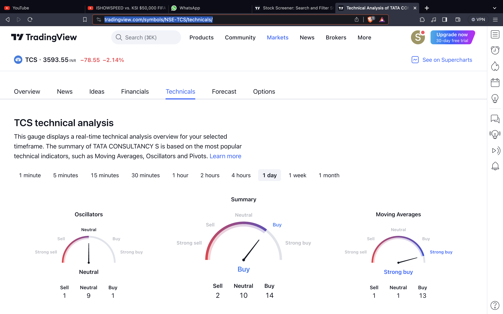

Technical Analysis
Mastering the art of technical analysis is essential for making informed trading decisions. This page provides insights into key concepts and tools used in technical analysis.
Key Concepts in Technical Analysis
Understanding these fundamental concepts is crucial for effective technical analysis:
- Trends: Identifying the direction of price movements, including uptrends, downtrends, and sideways trends.
- Support and Resistance: Levels where the price tends to stop and reverse, forming key reference points on a chart.
- Chart Patterns: Recognizing patterns such as triangles, flags, and head and shoulders formations.
- Indicators: Using technical indicators like Moving Averages, RSI (Relative Strength Index), and MACD (Moving Average Convergence Divergence) to analyze price movements.
- Candlestick Patterns: Interpreting patterns formed by candlesticks, providing insights into market sentiment.
Technical Analysis Tools
Explore the tools commonly used in technical analysis to enhance your trading skills:
Articles and Charts
Further your understanding of technical analysis with these articles and visual aids:

Example Technical Analysis Chart